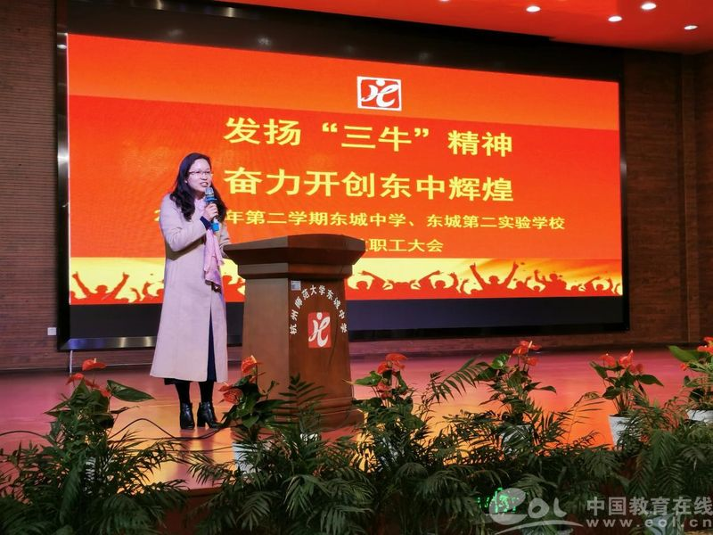
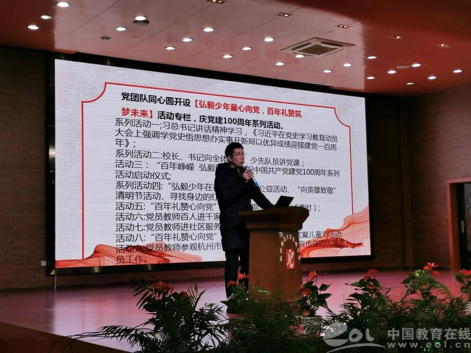
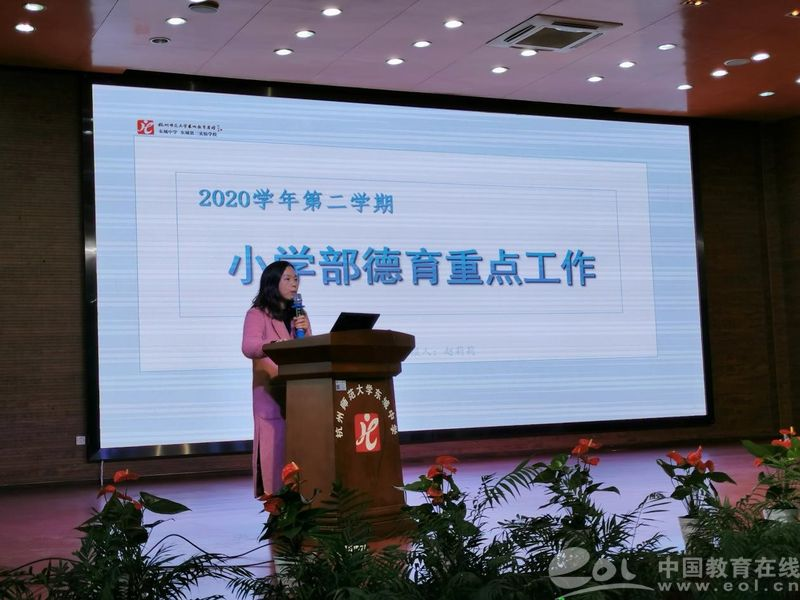
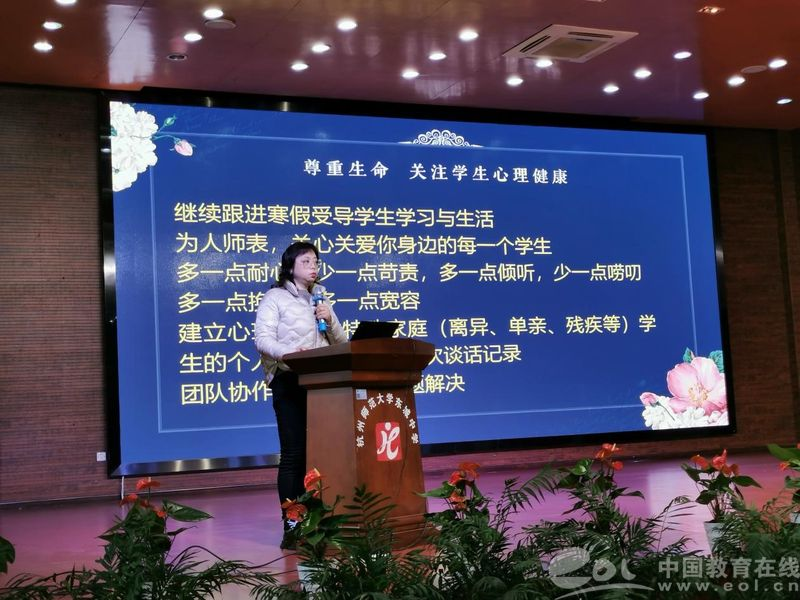

徐彬
适逢建党100周年，学校书记徐彬对2021年学校党建工作的计划进行了详细解读，从落实党建责任制工作、落实党风廉政责任制、建立“党团队同心圆”机制、加强和改进意识形态工作、加强宣传阵地建设等方面对全体党员教师提出了新的要求。

赵莉莉
校长助理赵莉莉从加强党团队一体化建设、创建德育的电子资源库、细化“美好成长”体系等方面介绍本学期小学德育重点工作。

王咏梅
校长助理王咏梅回顾了寒假期间忙碌的工作和生活，从进一步优化弘毅少年评价制度、关注师生身心健康等方面介绍了新学期的中学德育重点工作，要求全体师生一定要严格遵守防疫要求，严守学校防疫底线，通过对防疫知识的现场提问，老师们对防疫要求已经内化于心。

杨国军
校长助理杨国军对新学期的教学工作计划进行了细致的解读，从合格教研组考核、教师集体备课、上课等方面对教师提出了新的要求。